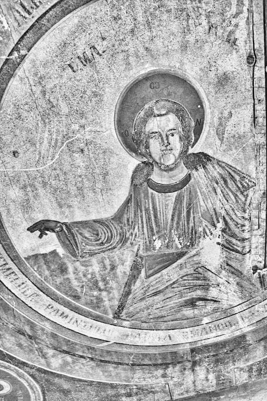

Trăim, în chip evident, o perioadă dominată de o practicare acerbă a criticii de tot felul, fie ea îndreptățită sau aberantă. Înmulțirea mijloacelor de comunicare în masă, care propagă cu precădere critica, sporește acest sentiment. Toată lumea critică pe toată lumea. Celălalt este totdeauna cel criticabil, tu rămâi, superior, în afara oricărei (auto)critici. A devenit tot mai vizibilă o plăcere de a arăta cu degetul spre celălalt, crezându-se că scăderile lui ne-ar plasa pe noi la un nivel superior. Or, lucrurile stau tocmai invers, numai valoarea celui de lângă mine poate spori propria-mi valoare.
Înainte de decembrie ’89, pentru o lungă perioadă de timp, critica, însoțită totdeauna și de autocritică, era considerată una dintre piesele de bază ale codului etic comunist. Critica opera, cu prea rare excepții, numai de sus în jos, iar autocritica era cel mai adesea impusă din afară (tot „de sus”!), ca o condiție a mai ușoarei pedepsiri a unor „păcate” față de partidul unic.
Critica faptului petrecut presupune analiză și apreciere obiectivă, pe criterii clare a unui act sau a unei opere. Nu se mai poate face nimic pentru schimbare în bine, dar se poate face pentru o mai corectă receptare și o prelungire benefică a lucrării respective asupra urmașilor. Critica faptului în desfășurare presupune, în cazurile fericite, posibilitatea desprinderii de componentele proaste și a îmbunătățirii lucrării respective din mers. În sfârșit, critica unui proiect s-ar cuveni să aibă în vedere prevenirea unor greșeli și mai buna orientare a lucrării respective.
Cel mai adesea, însă, critica se face post factum, ea rămânând ceva rece, distant, cel ce critică neimplicându-se în dificultatea celui criticat. Mai mult chiar, nu o dată ea este însoțită, parcă, de o anumită satisfacție a constatării căderii celuilalt. Se constată abaterile fără să se aibă neapărat în vedere îndreptarea.
Sunt și domenii, cum ar fi cel al artelor, în care critica a devenit o profesie (critic de artă, critic muzical, critic teatral…). Critica de acest fel presupune o analiză obiectivă, pe bază de criterii recunoscute.
Nici teologia nu s-a lăsat mai prejos. A apărut critica biblică, de sorginte protestantă, cu minusurile ei, dar și cu anumite contribuții benefice.
Critica a devenit așadar pentru prea mulți un modus vivendi. O obișnuință păguboasă. Ea roade adesea, transformată în reproșuri nesfârșite, unitatea comunitară, inclusiv pe cea a familiei. Criticăm, criticăm… De aici poate apărea o blazare în fața criticii, o lipsă de reacție, îngroșarea obrazului. Dar cel mai adesea avem de a face cu riposte, se răspunde la critică cu critică, se amorsează polemica cu tot cortegiul ei de proaste raportări, cu deteriorarea ireversibilă a relațiilor.
Desigur, nu este ușor să suporți o mustrare, nu este ușor să suporți judecarea faptelor tale. Îți vine greu să-ți recunoști greșelile (ca să nu mai vorbim de păcate). Și asta pentru că greșeala a venit după crearea omului, a intrat în viața lui o dată cu căderea și, ca atare, rămâne străină ființei ultime a omului. Ea mărturisește o neputință, dar foarte adesea și o proastă orientare spirituală. De aceea mustrările provoacă o stare de suferință, de disconfort, de unde o reacție de respingere, de justificare a propriilor greșeli. Aceasta nu dispare cu totul nici chiar în cazul mustrării creștine care este, în chip vădit, îndreptată spre vindecare.
Așadar, folosul criticii depinde mult de duhul în care este făcută. Dacă are un aspect distructiv sau constructiv. Dacă are în vedere desființarea celui criticat sau recuperarea lui. Dar despre o reală recuperare nu se poate vorbi decât în Biserică. Numai Dumnezeu este Cel Care nu vrea moartea păcătosului, ci să se întoarcă și să fie viu.
O situație extrem de dificilă o numim situație critică, în sensul că dincolo de ea nu se poate trece în dificultate, că ne aflăm într-un punct decisiv: viață sau moarte (desigur, nu luăm acum aceste cuvinte în sens biologic).
Cuvântul critică provine de la grecul kritein = a judeca. Pentru creștini, judecata constituie o situare cu totul deosebită față de orice altă (pseudo)spiritualitate. Aproape instantaneu vine completarea: dreaptă judecată. Dreapta judecată presupune și impune înțelepciune, experiență de viață acumulată și receptarea atentă a întâlnirii cu Dumnezeu. Învățătura este clară: „nu judecați ca să nu fiți judecați” (Matei 7, 1). Judecata se cere făcută cu toată hotărârea asupra unei fapte, dar niciodată asupra făptuitorului ei. Fapta poate fi condamnată, mai ales când ea este evidentă, în schimb judecarea făptuitorului este lăsată în „plata Domnului”. Judecarea în sensul de condamnare definitivă, de destinare a a unei persoane răului (mai ales la această destinație îi trimitem pe semenii noștri) sau binelui veșnic nu-și are locul în cugetarea creștinului. Se cuvine a păstra o rezervă în legătură cu judecata noastră și mai apăsat în legătură cu verdictul pe care suntem ispitiți să-l dăm. Numai Dumnezeu este absolut obiectiv și cunoaște până la capăt lăuntrul fiecăruia. De aceea judecata aparține în întregime Fiului lui Dumnezeu (Ioan 5, 22).
Pentru noi orice analiză ar trebui să pornească de la învățătura evanghelică. A criticat Hristos? Dacă da, când și cum a făcut-o?
Ceea ce face Hristos cu aspect critic, am putea numi, mai degrabă, mustrări sau dojeni. Totdeauna El este alături de cel mustrat, compătimește cu el, gata să-i primească întoarcerea. La fel, duhovnicul, fiind în timpul spovedaniei numai un martor al lui Hristos, iar în afara ei sfătuind cu experiența vieții sale ascetice, nu critică, ci pune în fața fiului său duhovnicesc oglinda realistă a faptelor sale, îl mustră și îl sfătuiește spre îndreptare, ajutându-l în purtarea crucii păcatelor sale.
Mustrarea se cuvine să fie fățișă (nu neapărat publică!), altfel se transformă în bârfă. De asemenea, se cere să fie asumată, pe cât se poate obiectivă, deși o notă de subiectivism nu va putea fi stinsă niciodată.
Seria de „Vai vouă!” adresată cărturarilor și fariseilor (Matei 23) este totodată și o plângere nesfârșită de către Cel care a vrut să-i adune pe fii Ierusalimului „așa cum adună cloșca puii sub aripi”, a celor care au refuzat repetat să asculte chemarea Sa, transmisă pe parcursul istoriei mântuirii prin profeți, iar la plinirea vremii prin Însuși Fiul lui Dumnezeu. Există la Hristos o evidentă asprime și o anumită dezamăgire. După cum aspră și greu de suportat era și mustrarea proorocilor. Tipul acesta de mustrare are rolul bisturiului, care curăță cangrena, extrem de dureros, dar întru tămăduire definitivă.
Modelul evanghelic însoțit de modelul tradițional (înțelegând tradiția practicii Sfinților Părinți) este cel care ar trebui să conducă specificitatea practicării criticii în Biserică. Preponderentă se cuvine să fie dorința de îndreptare a celuilalt, or, pentru aceasta, fermitatea mustrării se cere îmbinată și cu multă delicatețe, cu însoțirea cu cel mustrat în purtarea crucii sale. „Certa-mă-va dreptul cu milă și mă va mustra” (Psalmul 140, 5). Așadar, reținere și multă cumpănire înainte de a critica pe celălalt, multă deschidere și răbdare în primirea criticii. Se impune o primire a criticii cu deschidere, ea să nu fie luată ab initio ca fiind greșită sau tendențioasă. Totdeauna este ceva de preluat și de îndreptat chiar și dintr-o critică nedreaptă. Să se tragă măcar concluzia că este necesar un efort de a te face mai limpede înțeles. Și apoi nu se spune că Dumnezeu îl ceartă pe cel pe care-l iubește?
Ce critici a avut a înfrunta Biserica noastră și din partea cui au venit ele? Dacă înainte de decembrie 1989 Biserica era marginalizată din punct de vedere mediatic, după aceea situația s-a schimbat vizibil. Comunicarea în legătură cu ea a devenit vizibilă. Ca atare, Biserica a avut a se confrunta, în partea ei instituțională, cu o serie de critici, chiar dacă ea a rămas necontenit instituția care s-a bucurat, de departe, de cea mai mare încredere din partea populației.
Pe de o parte au existat critici venite din interior. Unele din dorința sinceră de a îndrepta situații precare. Altele din necunoaștere sau din orgoliul de a considera propria opinie ca singura corectă și de luat în seamă. Sigur, se știe că o comunitate dezbinată din interior devine șubredă. În același timp, dezbaterea de obște a problemelor și dificultăților cu care se confruntă Biserica într-un moment sau altul este benefică atâta timp cât aceasta se desfășoară în duh evanghelic. Au existat și opinii de felul celei exprimate de un fost consilier patriarhal, precum că „nu ne ridicăm poalele în public”. Biserica nu este în nici un caz o instituție închisă și are destulă forță în ea însăși, atât prin temeiul ei, Hristos și învățătura Sa, cât și prin istoria ei plină de încercări și de biruințe, pentru a putea să se (auto)supună unei examinări critice a actelor ei, mai ales când aceasta vine din partea unor oameni a căror viață este devotată total crezului ei.
Un creștin care cunoaște și își asumă canoanele Bisericii, știe că nu este permisă separarea de clericul în păstorirea căruia se află decât pentru motive dogmatice, așadar de abatere flagrantă de la dreapta credință. Motivele de abatere morală nu sunt suficiente. Aceasta ne aduce aminte de episodul cu Noe, care, băut fiind, a fost văzut descoperit de către fii săi. Unul, Ham, a râs și a fost pedepsit, alții, Sem și Iafet, l-au acoperit cu pudică grijă și așa l-au moștenit (Facerea 9, 20-27). Considerăm că, totuși, atunci când este făcută cu delicatețe și are în vedere propășirea morală și duhovnicească în Biserică, o critică decentă și lipsită de tonuri necuviincioase nu este de neacceptat, chiar adresată de jos în sus. Dimpotrivă!
O altă categorie de critici o reprezintă cele venite din exterior, de la cei care nu trăiesc asumat în Biserică sau de la cei de alte credințe, de la cei care nu-i cunosc sau nu-i agreează învățătura și rânduiala. (Poate că, în aceste cazuri, ar trebui să facem o separare între criticile adresate Bisericii și cele adresate unor persoane cu responsabilități mai mici sau mai mari în Biserică.)
Iată câteva cazuri concrete de critici adresate mai adesea Bisericii: neimplicarea suficientă în social; colaborarea cu regimul comunist și, în general, relația cu puterea oricărui timp; compromiterea unor clerici și prin ei a întregii Biserici; relația proastă, îndeosebi patrimonială, cu Biserica Greco-Catolică; implicarea sau neimplicarea în viața politică și socială; prea marea ancorare în tradiție și lipsa dorinței de modernizare (de aggiornizare, ca să folosim un barbarism); o anumită dificultate în comunicarea cu intelectualii și inapetența pentru valorile culturale; prea puțin sau prea mult „ecumenism” (eventual oportunismul lui); folosirea în destule împrejurări a unui limbaj prea lipsit de culoare și de viață (eventual „de lemn” specific), incapabil să transmită frumusețea și profunzimea mesajului christic; mai recent, construirea Catedralei Mântuirii Neamului sau numai amplasarea acesteia ș.a.
Cum a răspuns Biserica la critici? Cum s-a comportat ea față de această situație relativ nouă cu care a fost confruntată? La început a fost mai timorată și mai reținută. Apoi, destul de repede, și-a revenit. A răspuns atunci când a fost cazul, explicând. A tăcut în alte situații, când dialogul ar fi tins să coboare sub un nivel decent și civilizat. A răspuns la nivel individual, prin slujitorii ei sau prin creștinii laici capabili să intre în dialog cu societatea civilă. Dar răspunsurile cele mai pertinente și, s-ar putea spune, niciodată greșite, totdeauna ponderate și înțelepte, totodată ferme, le-a dat Sfântul Sinod. Se dovedește, o dată în plus, că Biserica nu este o instituție ca oricare alta, că asistența Duhului Sfânt este reală și neîncetată, uneori miraculoasă. Lucrarea Bisericii în sobornicitatea ei depășește cu mult suma lucrărilor și putințelor individuale ale fiilor ei.

Remarcabil este faptul că Biserica a răspuns mai mult și mai convingător prin fapte decât prin vorbe. Ea a ales, în general, nu intrarea în polemici sterile cu cei de alte opinii, cu criticii ei, ci lucrarea. Biserica a lucrat fără ca să facă prea multe valuri. Ea s-a implicat extrem de activ în varii acțiuni sociale (în spitale, penitenciare, armată, orfelinate, aziluri etc.), fie ca instituție centrală, fie prin parohii, fără tam-tam, și, ca atare, fără ca mulți să o știe. (Dumnezeu le știe însă pe toate!) A ieșit, pe cât i-a fost cu putință, cu deschidere ponderată, spre întâlnirea cu societatea civilă, îndeosebi cu intelectualii reprezentativi. Sunt destui reprezentanți ai Bisericii al căror discurs s-a vitalizat, fără să abandoneze nimic din ceea ce este tradiție. Pe plan interconfesional, Biserica Ortodoxă Română a promovat un dialog fertil, exemplar, în care deschiderea sinceră și prietenoasă, îndeosebi înspre cele mai importante confesiuni creștine, nu a însemnat în nici un chip abandonarea condiției ortodoxe, în ceea ce privește învățătura de credință și trăirea ei. A fost ca o mamă iubitoare pentru românii din diaspora, trimițând la ei pe unii dintre fii ei cei mai de nădejde. A știut să păstreze echidistanța cuvenită față de partidele politice, amendând pertinent, cu fermitate și decență, abaterile de la morala creștină, cerând înțelegere față de grijile și nevoile vitale ale oamenilor simpli.
În timpurile vechi, atunci când Biserica era atacată (în ceea ce privește doctrina sau morala propovăduite) într-un fel sau altul, se nășteau apologiile, apărări inspirate și slăvitoare de Dumnezeu. Este modelul de urmat până astăzi și în veci.
Sunt multe feluri de a apăra Biserica și de a răspunde la critici. Fiecare o poate face după darurile cu care este înzestrat, după felul în care este construit interior, după firea sa. Totul este ca devotamentul față de Biserica cea Una a lui Hristos să fie total. Ar fi de semnalat două situări diferite foarte semnificative, manifestate în Biserica noastră în anii din urmă. Una ar fi cea defensivă, practicată de Înalt Preasfințitul Nicolae Corneanu, mitropolitul Banatului. Cealaltă este cea de tipul ofensiv, așa cum o putem constata la Înalt Preasfințitul Bartolomeu Anania, arhiepiscopul Vadului, Feleacului și Clujului. Amândouă tipurile au fost benefice Bisericii și au lucrat în felul lor, complementar, s-ar putea spune.
În orice caz se cere aspru criticată erezia, abaterea de la dreapta învățătură. Neevidențiată ca atare întotdeauna, erezia este prezentă în gândirea spirituală a timpului nostru, cel puțin tot atât de mult ca în trecut. Și cel puțin tot atât de periculoasă, în forme adesea perfid mascate. Dacă în ceea ce privește critica care-ți este adresată personal, rămâne veșnic valabilă învățătura de a întoarce și celălalt obraz (Matei 5, 39), atunci când este vorba de Biserică și de învățătura ei se cere ieșirea curajoasă întru apărare. Cu armele specifice creștine, cele ale adevărului și iubirii, împletite desăvârșit. Dar și aici trebuie avută în vedere recuperarea. Oricum, certarea aceasta nu trebuie să fie nesfârșită. „Pe omul eretic, după întâia și a doua mustrare îndepărtează-l” (Tit 3, 10). De altfel este cunoscut cazul călugărului din Pateric care s-a lăsat acuzat în fel și chip (pe nedrept!), dar a reacționat violent atunci când a fost făcut eretic.
Faptul că, așa cum am mai menționat, în toate sondajele de opinie Biserica se bucură de încrederea cea mai mare se datorează, fără îndoială, în primul rând, faptului că Dumnezeu se bucură de încrederea oamenilor. Învățătura care s-ar trebui trasă ar fi aceea că oamenii au totuși conștiința clară că Dumnezeu este de aflat mai apropiat în Biserica Sa. În Biserică se cuvine să urmăm învățătura și îndemnul apostolic: „cuvântul vostru să fie: Da, da; Nu, nu” (Matei 5, 37). Criteriul adevărului este Adevărul-Hristos. Spunând cu iubire adevărul și iubind întru adevăr depășim critica, punem pe fratele nostru și ne punem pe noi înșine pe calea restaurării în condiția paradiziacă, cea a prieteniei tămăduitoare cu Hristos.
AXA ESTE UN ÎNDEMN LA ATITUDINE
Comentarii